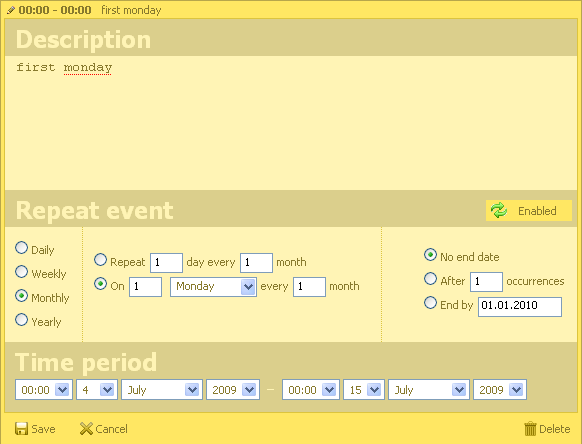

Recurring events
Interface
Starting from version 2.0, scheduler supports recurring events. To enable such functionality you need to include two additional files
- dhtmlxscheduler_recurring.js
- dhtmlxscheduler_recurring.css
<script src="codebase/dhtmlxscheduler.js" type="text/javascript" charset="utf-8"></script> <link rel="stylesheet" href="codebase/dhtmlxscheduler.css" type="text/css" charset="utf-8"> <script src="codebase/dhtmlxscheduler_recurring.js" type="text/javascript" charset="utf-8"></script> <link rel="stylesheet" href="codebase/dhtmlxscheduler_recurring.css" type="text/css" charset="utf-8">
All other initialization goes same as for normal scheduler.
As result you will have the “Details form” similar to next

“Enabled”|”Disabled” button at right corner of section allow enable|disable recurring for the event. In-section editor allow to choose type of event repeating and date when repeating will end.
Format of date in “end by” field, can be controlled by
- scheduler.config.repeat_date (possible values)
If you plan to add a custom fields to the details form , be sure to check specific of form customization when recurring events are used
Server side integration
DB need to have next additional fields
- rec_type - varchar[64]
- event_length - long int
- event_pid - int
So connector , will look similar to next
$scheduler->render_table("events_rec","event_id","start_date,end_date,text,rec_type,event_pid,event_length");
As in normal case, in addition to mandatory fields, any extra data can be extracted from DB.
rec_type
This data will be set automatically through scheduler interface
type of recurring encoded in string [type]_[count]_[count2]_[day]_[days]#[extra]
- type - type of repeating “day”,”week”,”week”,”month”,”year”
- count - how much intervals of “type” come between events
- count2 and day - used to define day of month ( first Monday, third Friday, etc )
- days - comma separated list of affected week days
- extra - this info is not necessary for calculation, but can be used to correct presentation of recurring details
For example:
- day_3___ - each three days
- month _2___ - each two month
- month_1_1_2_ - second Monday of each month
- week_2___1,5 - Monday and Friday of each second week
- none - special type value, which is used by deleted events from the serie (it will not be rendered in grid , but block recurring of repeated event in defined time)
event_length
length of event in seconds ( in case of recurring event, end data shows the moment when recurring will be finished, so separate field is necessary to store actual length )
event_pid
it possible to delete or change some events in serie - in such case, for each update, separate record created , which will point to master id , by using this field
The xml for recurring event will look as
<event id="some"> <start_date> start date of recurring period , start date of first event in the period as well </start_date> <end_date> end date of recurring period </start_date> <text> text of event </text> <rec_type> recurring type </rec_type> <event_length> length of event in seconds </event_length> <event_pid> 0 for master events, or ID of master event for sub-events </event_pid> </event>
In addition to extra fields, some logic need to be added to server side controller. ( you can check samples/reccuring_events/events_rec.php for example )
- if event with rec_type==none wad inserted - response must have “deleted” status
- if event with rec_type was updated or deleted - all records with event_pid equal to the master id must be deleted
- if event with event_pid value was deleted - it need to be updated with rec_type “none” instead of deleting.
function delete_related($action){ global $scheduler; $status = $action->get_status(); $type =$action->get_value("rec_type"); $pid =$action->get_value("event_pid"); //when serie changed or deleted we need to remove all linked events if (($status == "deleted" || $status == "updated") && $type!=""){ $scheduler->sql->query("DELETE FROM events_rec WHERE event_pid='".$scheduler->sql->escape($action->get_id())."'"); } if ($status == "deleted" && $pid !=0){ $scheduler->sql->query("UPDATE events_rec SET rec_type='none' WHERE event_id='".$scheduler->sql->escape($action->get_id())."'"); $action->success(); } } function insert_related($action){ $status = $action->get_status(); $type =$action->get_value("rec_type"); if ($status == "inserted" && $type=="none") $action->set_status("deleted"); } $scheduler->event->attach("beforeProcessing","delete_related"); $scheduler->event->attach("afterProcessing","insert_related");
All rights reserved.